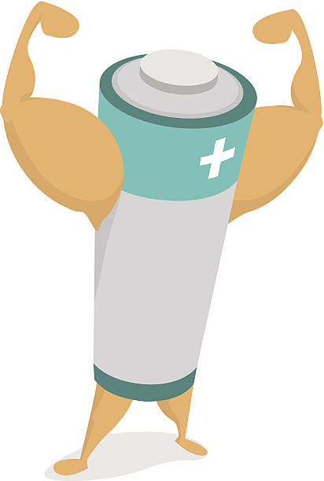
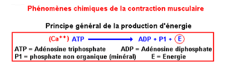
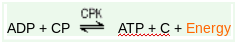
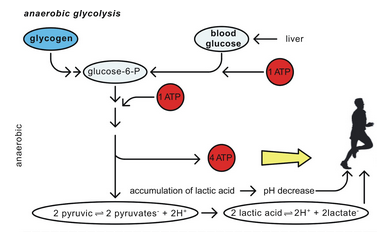
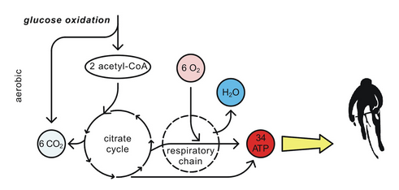

D'où vient et comment est synthétisée l'énergie utilisée par les muscles ?
Les muscles ont besoin d'énergie pour se contracter et ainsi assurer pleinement leur fonction
Le cycle global du fonctionnement d'un muscle peut se résumer ainsi : le sang apporte les nutriments (comme le glucose par exemple) et le dioxygène dans le muscle. Après une réaction chimique, il y a production d'énergie. Cette énergie va ensuite être utilisée par le muscle. Cela produit des déchets (dioxyde de carbone, chaleur, acide lactique...).
De façon générale, l’énergie musculaire est fournie (en présence de Calcium) par l’hydrolyse de l’Adénosine triphosphate (ATP), présente dans le muscle :
Néanmoins, les réserves d’ATP sont très faibles dans le muscle. Tout l’enjeu est donc de synthétiser cette molécule. Cette synthèse va dépendre de du régime de fonctionnement dans lequel l’athlète se trouve. En effet, la production d’ATP diffère selon l’intensité de l’effort.
Anaérobie alactique
Sans apport d'oxygène, l’ATP, dégradée rapidement, est reconstituée en permanence par une substance intermédiaire présente dans le muscle, la créatinine phosphate. Cette réaction permet de créer une grande quantité d’énergie en un temps très court. Cependant, le stock de créatinine est relativement faible et cette méthode de synthèse d’ATP est donc utilisée uniquement pour les efforts très courts (de l’ordre d’une dizaine de secondes)
Anaérobie lactique
utilisation du glycogène du muscle pour régénérer l’ATP. Cette production s’accompagne de production d’acide lactique, entraînant une diminution de pH dans le muscle. L’avantage de cette réaction est la capacité à produire de l’énergie et ce même dans conditions d’apport d’oxygène insuffisant. Cette synthèse est utilisée pour des efforts de quelques minutes.
Aérobie
(apport d’oxygène) : respiration cellulaire. La dégradation de l’ATP est obtenue par oxydation simple, utilisant l’oxygène du sang circulant. Ne produit pas d’acide lactique. En revanche, le facteur limitant est la quantité d’oxygène apportée par le sang. Utilisé pour les efforts de plus de 5 minutes.
